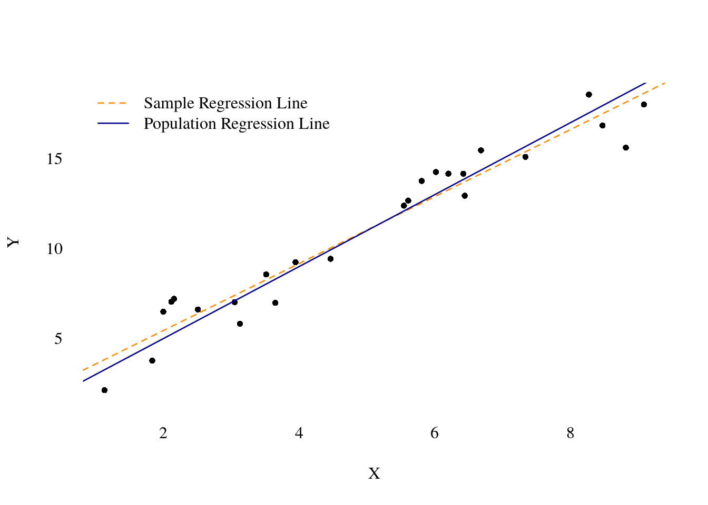

2.2 Ordinary Least Squares Estimation
There are many ways to estimate the parameters \(\beta_0\) and \(\beta_1\) of the simple linear regression model in . In the following, we will derive the Ordinary Least Squares (OLS) estimator using a ``mechanical’’ approach. In the next chapter, we will use an alternative approach () that is particularly interesting in econometrics. The properties of estimators for \(\beta_0\) and \(\beta_1\) crucially depend on the assumptions we need to make about \(\epsilon\) and \(X\).
2.2.1 Population vs. Sample Regression, Residual vs. Error
Let us define some necessary terms. Call \(\hat\beta_0\) our estimate of \(\beta_0\) and \(\hat\beta_1\) our estimate of \(\beta_1\). Now, define the predicted value, \(\hat Y_i\), of the dependent variable, \(Y_i\), to be
\[\begin{align}
\hat Y_i&= \hat\beta_0 + \hat\beta_1 X_i\label{eq:fitted_y}
\end{align}\]
This is just the prediction of the dependent variable, \(Y_i\), given the value of \(X_i\) and the estimates \(\hat\beta_0\) and \(\hat\beta_1\). Equation defines the sample regression line.
Define the , \(e_i\), as the difference between the observed value, \(Y_i\), and the predicted value, \(\hat Y_i\): \[\begin{align*} e_i&= Y_i - \hat Y_i \\ &= Y_i - \hat\beta_0 - \hat\beta_1 Y_i \end{align*}\] The residual, \(e_i\), is the vertical distance between the observed value and the sample regression line.
We must make an important distinction between the residuals, \(e_i\), and the errors \(\epsilon_i\). \[\begin{align*} e_i &= Y_i - \hat\beta_0 - \hat\beta_i X_i \\ \epsilon_i &= Y_i - \beta_0 - \beta_1 X_i \end{align*}\] Because \(\beta_0\) and \(\beta_1\) are unknown, we can never know the value of the error terms \(\epsilon_i\). However, because we actually come up with the estimates \(\hat\beta_0\) and \(\hat\beta_1\), and because we observe \(X_i\), we can calculate the residual \(e_i\) for each observation. This distinction is important to keep in mind.
Note that we can write \[\begin{align*} \epsilon_i &= Y_i - \beta_0 + \beta_1 X_i\\ &= Y_i - E[Y_i | X_i]. \end{align*}\] But for this to make sense, we needed to impose the orthogonality assumption that \(E[\epsilon_i | X_i]=0\), since only then we can identify the population regression line \(\beta_0 + \beta_1 X_i\) using the conditional mean of \(Y_i\) given \(X_i\).
2.2.2 Deriving the OLS estimate
The method of () estimation has a long history and was first described by Legendre in 1805 – although Karl Friedrich Gauss claimed to use OLS since 1795. In 1809 Gauss published his work on OLS which extended the work of Legendre.
The idea of OLS is to choose parameter values that for a given data set. These minimizing parameters are then the estimates of the unknown population parameters. It turns out that the OLS estimator is equipped with several desirable properties. In a sense, OLS is a purely method. We will see that it is equivalent to an alternative estimation method called methods of moments which have a more profound econometric motivation, given a certain set of assumptions.
Deriving the OLS estimate: Our objective is to find the parameter values \(\hat\beta_0\) and \(\hat\beta_1\) that minimize the sum of squared residuals
\[\begin{align*}
S_n(b_0, b_1)&=\sum_{i=1}^n e_i^2 \\
&=\sum_{i=1}^n (y_i - \hat y_i)^2 \\
&= \sum_{i=1}^n (y_i - b_0 - b_1 x_i)^2 \\
&= \sum_{i=1}^n (y_i^2 - 2 b_0 y_i - 2b_1 y_i x_i + b_0^2 +
2b_0 b_1 x_i + b_1^2 x_i^2)
\end{align*}\]
Now partially differentiate the last line with respect to \(b_0\) and \(b_1\), respectively.
\[\begin{align*}
\dfrac{\partial S_n(b_0,b_1)}{\partial b_0}&= \sum_{i=1}^n \left(-2y_i + 2b_0 +2 b_1 x_i\right)\\
\dfrac{\partial S_n(b_0,b_1)}{\partial b_1}&= \sum_{i=1}^n\left(-2y_i x_i + 2 b_0 x_i +
2 b_1 x_i^2\right)
\end{align*}\]
Setting the two partial derivatives equal to zero gives to equations and two unknown parameters which allows us to derive the minimizing arguments \((\hat\beta_0,\hat\beta_1)'=\min\arg_{(b_0,b_1)\in\mathbb{R}^2}S_n(b_0,b_1)\):
\[\begin{align*}
n\hat\beta_0 - \sum_{i=1}^n y_i+ \hat\beta_1 \sum_{i=1}^n x_i &=0\\
\sum_{i=1}^n\left(-y_i x_i + \hat\beta_0 x_i +\hat\beta_1 x_i^2\right)&=0
% -\left(\sum_{i=1}^n y_i x_i\right) + \hat\beta_1 \left( \sum_{i=1}^n x_i^2\right)&=0
\end{align*}\]
These equations are known as the . It is easy to see from the first normal equation that the OLS estimators of \(\beta_0\) is
\[\begin{equation}
\hat\beta_0 = \bar y - \hat\beta_1 \bar x
\end{equation}\]
Substituting \(\hat\beta_0\) into the second normal equation gives
\[\begin{align*} 0&=\sum_{i=1}^n\left(-y_i x_i + ( \bar y - \hat\beta_1 \bar x) x_i +
\hat\beta_1 x_i^2\right) \\
&= \sum_{i=1}^n\left(-x_i (y_i - \bar y)+ \hat\beta_1 x_i(x_i - \bar x)\right)\\
&=-\left(\sum_{i=1}^n x_i (y_i - \bar y)\right) + \hat\beta_1 \left(\sum_{i=1}^n x_i (x_i - \bar x)\right)\\
\end{align*}\]
Solving for \(\hat\beta_1\) gives
\[\begin{align*}
\hat\beta_1&=\dfrac{\sum_{i=1}^n (y_i - \bar y) x_i}{\sum_{i=1}^n (x_i-\bar x)x_i}\\\notag
&=\dfrac{\sum_{i=1}^n (y_i - \bar y) (x_i- \bar x)}{\sum_{i=1}^n (x_i-\bar x)(x_i - \bar x)}\\\notag
&=\dfrac{\sum_{i=1}^n (x_i- \bar x)y_i}{\sum_{i=1}^n (x_i-\bar x)^2}
\end{align*}\]
The last two lines follow from the that will be discussed in the exercises of this chapter.
## simulate data
set.seed(3)
n <- 25 # sample size
X <- runif(n, min = 1, max = 10)
error <- rt(n, df = 3)
beta0 <- 1
beta1 <- 2
Y <- beta0 + beta1 * X + error
## save simulated data as data frame
data_sim <- data.frame("Y" = Y, "X" = X)
## OLS fit
lm_obj <- lm(Y~X, data = data_sim)
##
## Plot
op <- par(family = "serif")
plot(x = data_sim$X, y = data_sim$Y, main="", axes=FALSE,
pch = 16, cex = 0.8, xlab = "X", ylab = "Y")
axis(1, tick = FALSE)
axis(2, tick = FALSE, las = 2)
abline(lm_obj, lty=2, lwd = 1.3, col="darkorange")
abline(a = beta0, b = beta1, lwd=1.3, col="darkblue")
legend("topleft",
col=c("darkorange", "darkblue"),
legend = c("Sample Regression Line",
"Population Regression Line"),
lwd=1.3, lty=c(2,1), bty="n")
## (Intercept) X
## 1.721012 1.861660Interpretation of the Results
The coefficients have the usual intercept and slope interpretation. In particular, \(\hat\beta_1\) in this case is the estimated of a one unit change in \(X\) on \(Y\): \[\begin{align*} E[Y | X] &= \beta_0 + \beta_1 X \\ \dfrac{\partial E[Y | X]}{\partial X} &= \beta_1 \end{align*}\] We do not know the true value of \(\partial E[Y | X]/\partial X\), but \(\hat\beta_1\) gives us an estimate \[\begin{align*} \widehat{\dfrac{\partial E[Y | X]}{\partial X}} &= \hat\beta_1. \end{align*}\]